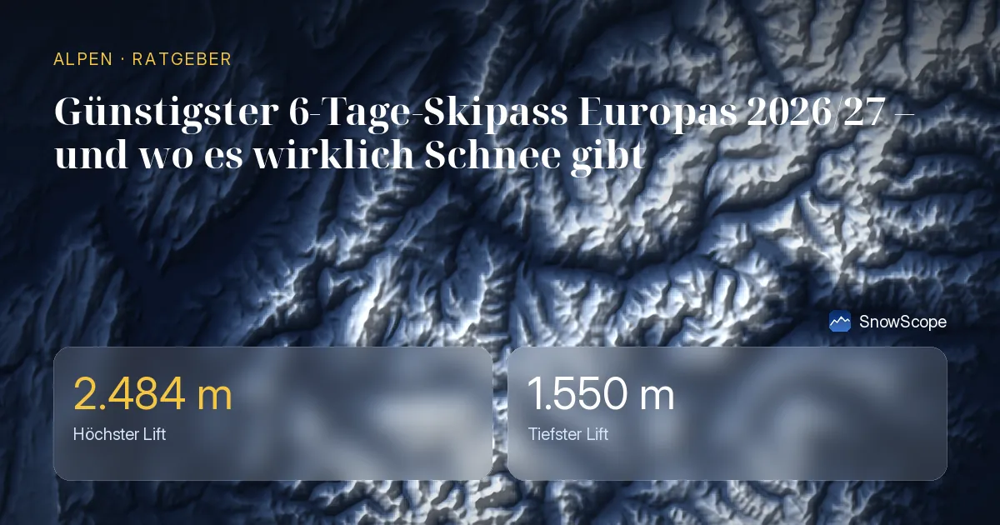
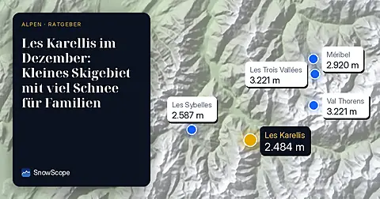

Günstigster 6-Tage-Skipass Europas 2026/27 – und wo es wirklich Schnee gibt
Die günstigste Skiwoche Europas in diesem Winter liegt nicht in Slowenien, auch wenn Slowenien einige der niedrigsten Preise hat. Les Karellis in den französischen Alpen verkauft einen 6-Tage-Pass für Erwachsene für 191 EUR, und in unserer Schneehistorie von 46 vergangenen Wintern gibt es dort 19 Wochen pro Winter mit mindestens 50 cm Schnee in 9 von 10 Wintern. Die günstigen slowenischen Pässe haben keine einzige.
Die Live-Schneeprognose für Les Karellis in der SnowScope-AppSchneehöhen, Pulverschnee-Alarme und 3D-Karte, gratis.
Die zehn günstigsten 6-Tage-Pässe im Check
Wir haben die Erwachsenenpreise für 6 Tage genommen, die die Skigebiete für den Winter 2026/27 veröffentlichen, und sie sortiert. Les Karellis liegt mit 191 EUR an erster Stelle, dann Krvavec mit 205 EUR, Rogla ab 210 EUR (bis zu 237 EUR an stärker gefragten Terminen), der Pass Horizon in Orcières Merlette mit 227 EUR, der auch das Schwimmbad und die Eisbahn öffnet, und Vogel mit 230 EUR.
Die zweite Gruppe liegt eng zusammen: Galtür mit 258 EUR in der Nebensaison, Livigno mit 258,5 EUR während der Aktion vom 28. November bis 18. Dezember 2026, Les 2 Alpes mit 266,5 EUR, Kühtai mit 269 EUR in der Nebensaison und Valloire-Valmeinier mit 278,5 EUR. Der Abstand zwischen Platz eins und Platz zehn ist kleiner, als die meisten erwarten – also sollte der Schnee entscheiden.
Preis ist nur die halbe Geschichte: der Schnee-Check
Ein günstiger Pass ist nur dann günstig, wenn auch Schnee zum Fahren da ist. Für jedes Skigebiet haben wir die Höhe auf halber Strecke in unserer Schneehistorie betrachtet und die Wochen eines normalen Winters gezählt, in denen in 9 von 10 Wintern mindestens 50 cm Schnee liegen. Wir nennen das schneesichere Wochen. 50 Zentimeter sind ungefähr das, was die meisten Pisten brauchen, um ohne Steine geöffnet zu werden.
Les Karellis hat 19 schneesichere Wochen auf 2.017 m. Les 2 Alpes hat 20 auf 2.397 m, Valloire-Valmeinier 19, Galtür und Kühtai je 18, Orcières Merlette 16 und Livigno 13. Krvavec, Rogla und Vogel haben 0: Ihre mittlere Höhe liegt zwischen 1.151 m und 1.718 m, und in einem gewöhnlichen Dezember liegen dort nur 6 bis 10 cm Naturschnee. Spaß machen können sie trotzdem, mit Beschneiung, aber dann setzt man auf das Wetter.
Unser Fazit für eine günstige Skiwoche
Für eine günstige Woche mit guten Schneechancen ist Les Karellis der klare Sieger: niedrigster Preis und 65 cm Schnee in einem gewöhnlichen Dezember auf mittlerer Höhe, 110 cm im Januar. Es ist ein kleines Gebiet mit 45 km Pisten, das eher Familien und fortgeschrittene Anfänger anspricht als Leute, die jeden Tag ein neues Tal wollen.
Wer mehr Gelände für etwas mehr Geld will, bekommt mit Les 2 Alpes 108 km Pisten und die höchsten Lifte der Liste, bis auf 3.511 m, für 266,5 EUR. Kühtai ist der österreichische Tipp: Die Lifte starten bei 1.939 m, sodass selbst der tiefste Punkt im Dezember meist 61 cm hat. Galtür ist die ruhige Alternative im Paznauntal.
Wann man fahren sollte, um den günstigen Preis zu zahlen
Mehrere dieser Preise sind Nebensaison-Tarife. Galtür und Kühtai verlangen in der Hochsaison mehr, und die 258,5 EUR von Livigno gelten nur bis zum 18. Dezember 2026. Die Woche vom 12. bis 19. Dezember ist der Sweetspot: Die niedrigen Preise gelten noch, und die Skigebiete über 2.000 m haben meist schon ihre Basis aufgebaut.
Im Januar liegt fast überall auf der Liste mehr Schnee. Wer zeitlich flexibel ist, bekommt mit einer Januarwoche außerhalb der Schulferien die beste Mischung aus Preis und Schnee – aber prüfe vor der Buchung, welcher Tarif an deinen Terminen gilt.
Wo man günstiger übernachtet
Der Pass ist nur ein Teil der Rechnung. Kleine Skigebiete wie Les Karellis und Orcières Merlette haben viele Apartments nah an den Liften, was die Woche für eine Familie günstig hält. In Galtür und Kühtai sind Gasthöfe oft billiger als Hotels. Die Karte in diesem Artikel zeigt Unterkünfte unter 120 EUR pro Nacht für die Woche vom 12. bis 19. Dezember, in der Nähe der von uns empfohlenen Skigebiete.
Prüfe immer die offizielle Website des Skigebiets, bevor du kaufst: Die Preise können sich im Laufe des Winters ändern, und die günstigsten Tarife gibt es oft nur online.
Tipps für Skifahrer
- Bestes Preis-Leistungs-Verhältnis für eine Skiwoche: Les Karellis, 191 EUR für 6 Tage und 19 schneesichere Wochen.
- Mehr Gelände: Les 2 Alpes, 266,5 EUR für 6 Tage und Lifte bis auf 3.511 m.
- Slowenische Pässe sind günstig, aber schneearm: Plane sie nur nach einem kräftigen Schneefall.
- Kaufe auf der offiziellen Website des Skigebiets und prüfe den Lawinenbericht, bevor du ins Gelände abseits der Piste gehst.
Weitere Karten (externe Seiten)
Quellen und Nachweise
- Les Karellis, official prices 2026-2027 www.leskarellis.com/fr/tarifs-2026-2027-sans-lien
- Krvavec: official lift-pass prices (2026-27), checked 13 November 2026 rtc-krvavec.si/cenik-urnik
- Rogla: official lift-pass prices (2026-27), checked 13 November 2026 www.rogla.eu/sl/aktualna-ponudba/ceniki/zimske-aktivnosti/cenik-smucarskih-vozovnic-v-sezoni-20262027/
- Orcières, official ticketing, winter 2026-27 pass.orcieres.com/en/ticketing
- Vogel: official lift-pass prices (2026-27), checked 13 November 2026 vogel.si/cenik-zima/
- Galtür: official lift-pass prices (2026-27), checked 13 November 2026 www.galtuer.com/en/winter/operating-times-prices/skipass-prices-silvapark
- Livigno, official ski pass price list 2026-27 (PDF) www.livigno.eu/hubfs/tariffe_26-27.pdf
- Les 2 Alpes, official ski pass shop, prices 2026-27 www.skipass-2alpes.com/en/pricing
- Kühtai: official lift-pass prices (2026-27), checked 13 November 2026 www.kuehtai.info/service/service/preise-wintersaison-2026-2027.html
- Valloire, official ski pass shop (Galibier-Thabor), winter 2026-27 skipass.valloire.com/fr/
Zu diesen Zahlen
Schneewerte: SnowScope-Schneehistorie, 46 vergangene Winter (1980-81 bis 2025-26) auf drei Höhen des Skigebiets, ein höhenkorrigiertes Modell der Vergangenheit (eine Schätzung für eine Fläche, keine Meldungen des Skigebiets). Lifte, Pisten und Anreise: die Quellen unten, geprüft am angegebenen Datum.
Diesen Bericht zitieren
Für Forschung, Lehre oder Presse: Zahlen und Grafiken sind unter CC BY 4.0 mit dieser Quellenangabe frei nutzbar.
SnowScope (2026), Günstigster 6-Tage-Skipass Europas 2026/27 – und wo es wirklich Schnee gibt, https://snowscope.app/blog/de/2026/11/cheapest-6-day-ski-pass-europe-2026-27-snow-check.html, abgerufen am 2026-11-19
SnowScope (Atlas Labs). (2026, November 19). Günstigster 6-Tage-Skipass Europas 2026/27 – und wo es wirklich Schnee gibt. SnowScope snow reports. https://snowscope.app/blog/de/2026/11/cheapest-6-day-ski-pass-europe-2026-27-snow-check.html
BibTeX
@misc{snowscope2026cheapest6dayskipasseurop,
author = {{SnowScope (Atlas Labs)}},
title = {Günstigster 6-Tage-Skipass Europas 2026/27 – und wo es wirklich Schnee gibt},
year = {2026},
month = nov,
howpublished = {\url{https://snowscope.app/blog/de/2026/11/cheapest-6-day-ski-pass-europe-2026-27-snow-check.html}},
note = {Published 2026-11-19 13:06 UTC; accessed 2026-11-19}
}· CC BY 4.0 · Methoden, Daten und Werkzeuge →
Les Karellis: Schnee und Temperatur nach Höhe, dieser Winter vs letzter (Werkzeuge) →
Les Karellis folgen
Gratis: eine Nachricht, wenn Neuschnee kommt, und jeden Morgen die Vorhersage.
Weitere Schneeberichte

Les Karellis bietet 45 km Pisten und einen 6-Tage-Skipass für Erwachsene für 191,00 EUR mit einer 98 %igen Schneewahrscheinlichkeit auf mittlerer Höhe Ende Dezember.

Wir bewerten französische Skigebiete nach der Schneewahrscheinlichkeit im Dezember und den Skipasspreisen, beginnend bei 36,00 EUR für einen Tagespass für Erwachsene in Les Karellis.

Von 20 EUR am Eröffnungswochenende bis zu 6-Tages-Pässen vor Weihnachten: ein Kalender der günstigsten Saisonstart-Angebote in den Alpen für 2026, mit dem Schnee, den du dabei erwarten kannst.